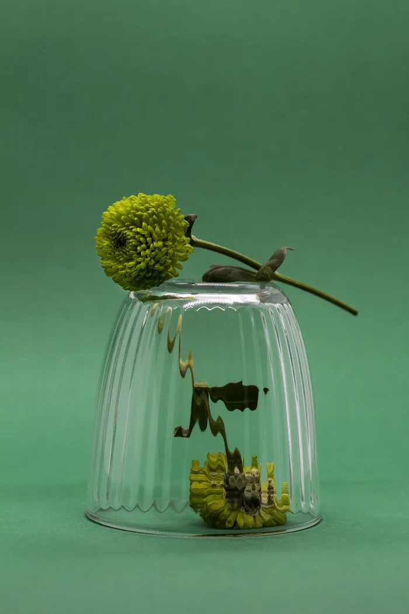

Ash vase.
Pulled by hand and fired twice. It ships wrapped in paper, in five days.
$68$74.80
Ash grey · 24 cmIncludes 10% tax
Hand glazed
Ash grey, matte
Ships in 5 days
Free over $60

In Annotate mode, Tab goes through the page elements, Enter adds a note to the one in focus, Return saves it, Escape closes the note and then leaves Annotate.
Press an element to pin a note · Return saves · drag a pin to move it, or onto the bin to remove it · Send to agent · Tab walks the elements, Enter pins, Escape leaves